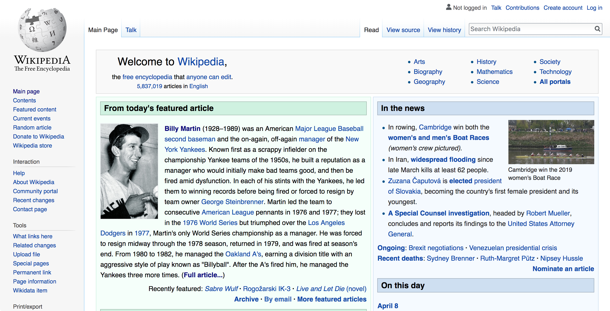

Introduction
This usability analysis will focus on the websites of Fandom.com. Fandom.com is a series of websites, formerly known as Wikia, founded by Wikipedia founder Jimmy Wales and Angela Beesley Starling. The websites provide free-to-use wiki hosting, primarily in the form of online encyclopedias focused on popular works of fiction. This includes encyclopedias of popular works of fiction such as Frank Herbert's Dune, George R. R. Martin's Game of Thrones, and George Lucas's Star Wars. Although all of the sites are hosted by Fandom.com, they have different administrators. Thus, for the purpose of this usability report, the Fandom Wiki for Star Trek, called Memory Alpha, will be analyzed. The site can be found at https://memory-alpha.fandom.com/wiki/
There are two important elements of Memory Alpha, and Fandom.com wiki sites in general, that are important to understand. The content of these websites is provided without pay by users. Anybody is allowed to edit the content of the sites, although administrators of a page can lock specific contain or forbid certain users from editing. Despite that, these websites are for-profit; Fandom.com profits from advertising that appears on all of its pages. As specific elements of usability are considered, it will be important to remember these aspects of the site
In addition, because of the easy comparison, there will be a number of comparisons with Wikipedia, the Free Encyclopedia. As both websites are based on the same web technology and serve a relatively similar purpose, the desire to use Wikipedia as a comparison should be apparent.
Guidelines for Usability
The guidelines used in this analysis have been taken from the US Department of Health and Human Services web standards guidelines. These and other guidelines for web usability can be found on their website at webstandards.hhs.gov/guidelines. Guidelines referenced in this and other posts are summarized below:
2:1. Do Not Display Unsolicited Windows or Graphics
Guideline: Do not have unsolicited windows or graphics 'pop-up' to users.
2:12. Develop Pages that Will Print Properly
Guideline: If users are likely to print one or more pages, develop pages with widths that print properly.
3:5. Provide Text Equivalents for Non-Text Elements
Guideline: Provide a text equivalent for every non-text element that conveys information.
5:3. Create a Positive First Impression of Your Site
Treat your homepage as the key to conveying the quality of your site.
6:1. Avoid Cluttered Displays
Guideline: Create pages that are not considered cluttered by users.
6:6. Optimize Display Density
Guideline: To facilitate finding target information on a page, create pages that are not too crowded with items of information.
8:2. Facilitate Rapid Scrolling While Reading
Guideline: Facilitate fast scrolling by highlighting major items.
16:5. Minimize the Number of Clicks or Pages
Guideline:To allow users to efficiently find what they want, design so that the most common tasks can be successfully completed in the fewest number of clicks.
General Layout and the Home Page
On loading of the main homepage, Memory Alpha suffers from a number of general layout issues. There are multiple unsolicited advertisements on each page (2:1), starting at the very top of the page. In some cases, this pushes the desired content down the page, requiring additional scrolling on the part of the user. With two separate advertisements appearing on first load (one at the top of the page and one along the right sidebar), a navigation bar at the top of the page below a Fandom.com login/navigation bar, and two different methods for selecting a language preference, the page already feels cluttered (6:1).
The front page of Memory Alpha on first load, including all advertisements.The only content that is visible on the desktop version of Memory Alpha's webpage is the introductory text that explains the purpose of the page. It is good that the site's purpose is evident from the home page (5:3). However, it is unfortunate that no other site content is visible on the home page when it loads. The closest thing that can be seen is the very top ofo a highlight box immediately below the language selector bar; this box contains links to timely and relevant content (in this case, related to the currently airing television series, Discovery).
Compare Memory Alpha's home page to that of Wikipedia. In a lot of ways, Wikipedia more effectively pushes content to the user. There is a great deal more content on the Wikipedia front page, which inherently raises a concern of overly dense contet (6:6). However, light color coding and clear headers help distinguish the different context boxes.
 The front page of Wikipedia on first load, with considerbale more design space dedicated to the content.Overall, the amount of screen space that Memory Alpha dedicates to advertising causes measurable harm to the overall effectiveness and usability of the site. However, as the website is made available for free to both administrators and end users, those advertisements are the revenue stream that keeps the website running. Furthermore, it appears that most of the choices of ad placement are outside of the control of the wiki's adminsitrators.
Accessability
As most of the content of the site is text and images, there are not a lot of opportunities to provide text descriptions for non-text content (3:5). All of the images either have a caption or an alt tag to provide textual context. However, a brief review indicates that ALT tags are not used consistently across the site. For example, in the screen capture below, the larger image does not have a caption but does feature an ALT tag. Given variability across different devices, especially screen readers, it would be better to include ALT tags on every image. [Note: Wikipedia does not include ALT tags on all images either.]
The image of Kirk (above) has an ALT tag while the image of Governor Kodos (below) has none.The website does create meaningful content when sent to a printer. Having tested it across several pages on multiple browsers, the printed pages use black on white (instead of the page's white on dark gray) and eliminate all of the advertiser content (2:12). The most apparent problem with the printed content is that hyperlinks appear in a much lighter color in the text. As the wiki includes a significant number of links to other articles, this makes reading the printout somewhat difficult (especially in link-dense portions of the page).
Responsiveness on Mobile Devices
With the proliferation of mobile devices that are web capable, being able to create and deliver responsive websites is important. As the website is built on the same technology as Wikipedia, it would be reasonable to assume that the sites operate similarly across mobile devices. However, this assumption may be presumptive.
Both sites on Mobile (iPhone 8)
The most notable differnece here is the presence of advertisements on Memory Alpha that take up approximately 25-30% of the total screen spacae. Coupled with the fact that the article selected displays an image at the top of the page makes the less than impressive on load (5:3). In addition, advertisements pop in and pop out of the page after load, which upsets the layout of the entire page and makes for a less usable site (2:1)
Conclusions
As the core of Fandom.com's website is built on the same technology used by Wikipedia, it makes sense that there are many similarities. Given most of what was observed here, the biggest failings of Memory Alpha (and likely any of the other Fandom websites) come from the extensive pushing of advertisements throughout the site. With full-width header advertisements that take up 30% of the available screen space, Fandom.com's profit model is, at its core, a usability issue. When compared to their non-profit sibling, Wikipedia, the differences are notable and obvious.